销连接的类型特点及应用 |
|||
类型 |
结构图例 |
特点和应用 |
|
圆柱销 |
主要用于定位，也可用于连接。直径偏差有u6、m6、h8、h11四种以满足不同的使用要求。常用的加工方法是配钻、铰，以保证要求的装配精度 |
||
内螺纹圆柱销 |
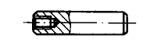 |
主要用于定位，也可用于连接。内螺纹供拆卸用，有A、B两种规格。B型用于盲孔。直径偏差只有n6一种。销钉直径最小为6mm。常用的加工方法是配钻、铰，以保证要求的装配精度 |
|
螺纹圆柱销 |
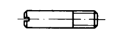 |
主要用于定位，也可用于连接。常用的加工方法是配钻、铰，以保证要求的装配精度。直径偏差较大，用于要求定位精度不高的场合 |
|
带孔销 |
两端用开口销锁住拆卸方便。用于铰链连接处 |
||
弹性圆柱销直槽重型 |
有弹性，装配后不易松脱。钻孔精度要求低，可多次拆装。刚性较差，不适用于高精度定位。可用于有冲击、振动的场合 |
||
弹性圆柱销卷制重型 |
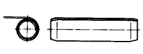 |
销钉由钢板卷制，加工方便。有弹性，装配后不易松脱。钻孔精度要求低，可多次拆装。刚性较差，不适用于高精度定位。可用于有冲击、振动的场合 |
|
圆锥销 |
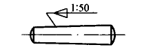 |
有1:50的锥度。与有锥度的铰制孔相配。拆装方便，可多次拆装，定位精度比圆柱销高。能自锁。一般两端伸出被连接件，以便拆装 |
|
内螺纹圆锥销 |
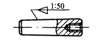 |
螺纹孔用于拆卸。可用于盲孔。有1:50的锥度。与有锥度的铰制孔相配。拆装方便，可多次拆装定位精度比圆柱销高。能自锁。一般两端伸出被连接件，以便拆装 |
|
螺尾锥销 |
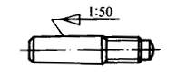 |
纹孔用于拆卸，拆卸方便。有1:50的锥度。与有锥度的铰制孔相配。拆装方便，可多次拆装定位精度比圆柱销高。能自锁。一般两端伸出被连接件，以便拆装 |
|
开尾锥销 |
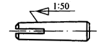 |
有1:50的锥度。与有锥度的铰制孔相配。打入销孔后，末端可以稍张开，避免松脱，用于有冲击、振动的场合 |
|
开口销 |
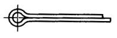 |
用于锁定其他零件，如轴、槽形螺母等。是一种较可靠的锁紧方法，应用广泛 |
|
销轴 |
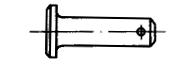 |
用于作铰接轴。用开口销锁紧，工作可靠 |
|
槽销带导杆及全长平行沟槽 |
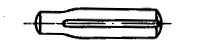 |
沿销体母线辗压或模锻三条(相隔120°)不同形状和深度的沟槽，打入销孔与孔壁压紧，不易松脱。能承受振动和变载荷。销孔不需铰光，可多次装拆 |
全长有平行槽，端部有导杆或倒角。销与孔间壁间压力分布较均匀。用于有严重振动和冲击载荷的场合 |
槽销带倒角及全长平行沟槽 |
|
||
槽销中部槽长为l/3全长 |
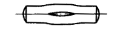 |
槽中部的短槽等于全长的1/2或1/3，常用作心轴，将带毂的零件固定在有槽处 |
|
槽销中部槽长为1/2全长 |
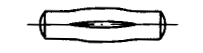 |
||
槽销全长锥槽 |
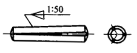 |
槽为楔形，作用与圆锥销相似，销与孔壁间压力分布不均匀。比圆锥销拆装方便而定位精度较低 |
|
槽销半长锥槽 |
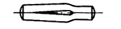 |
||
槽销半长倒锥槽 |
|
常用作轴杆 |
|
圆头槽销 |
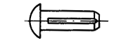 |
可代替铆钉或螺钉，用于固定标牌、管夹子等 |
|
沉头槽销 |
|
||